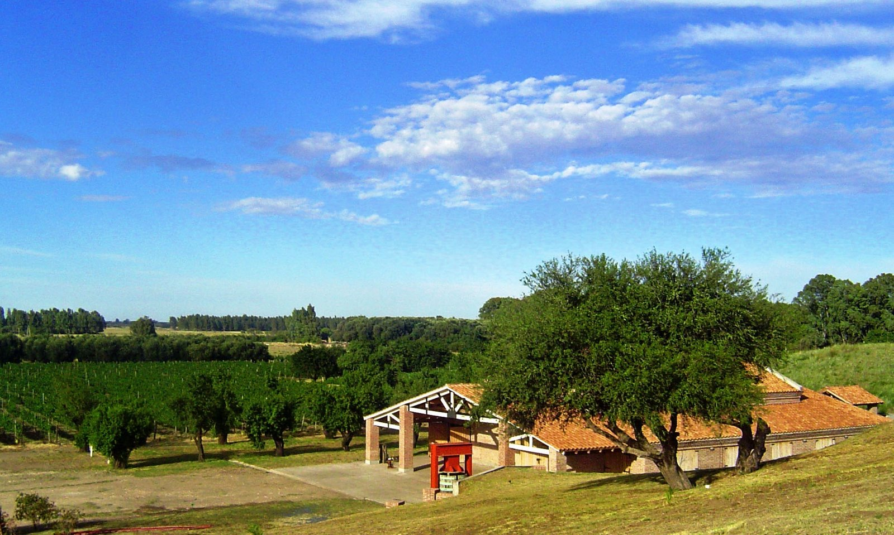
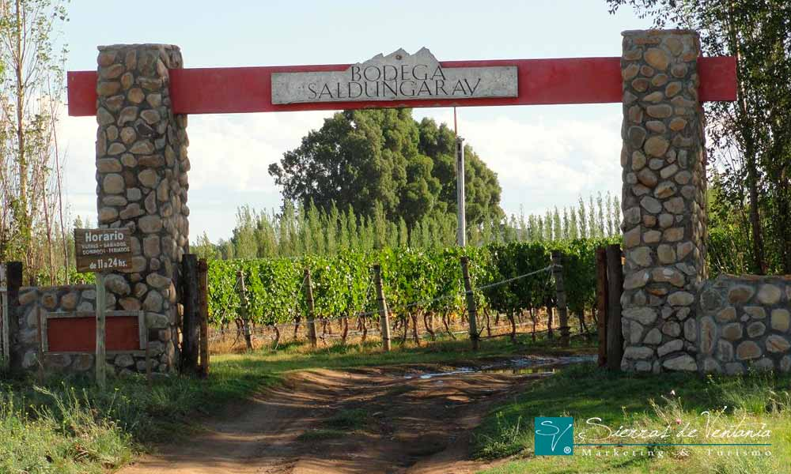
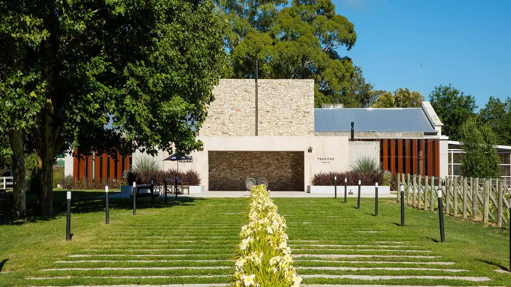
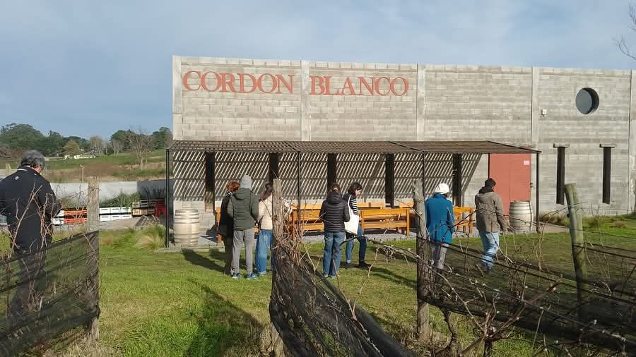
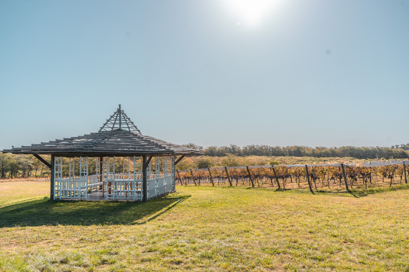
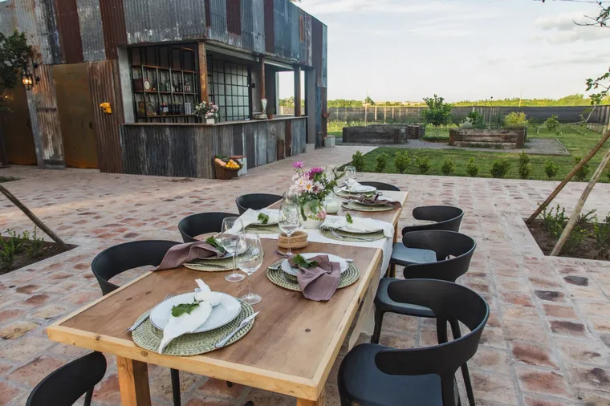
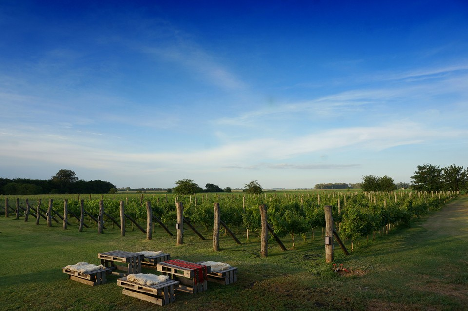
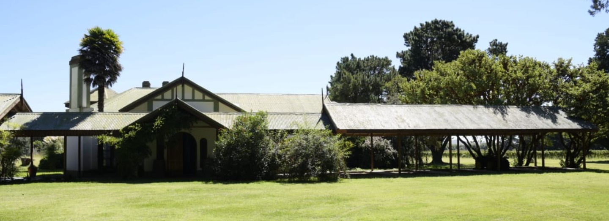
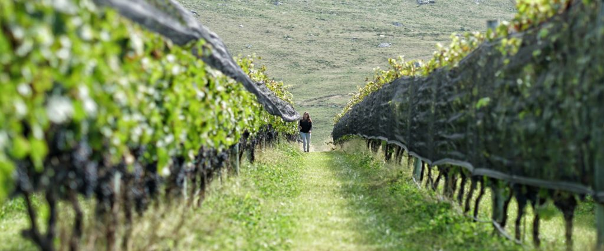

Bodegas:
-

Bodega AlEste
📍 Provincia de Buenos Aires, Medanos
Con espíritu pionero llegamos a un lugar único, distinto y poco conquistado. Allí, donde se confunden la Pampa y la Patagonia, Al Este Bodega & Viñedos representa el punto de partida para sumar al mapa vitivinícola mundial una nueva región argentina productora de vinos de alta calidad.
-

Bodega Saldungaray
📍 Provincia de Buenos Aires, Saldungaray
La provincia de Buenos Aires alberga espacios con suelos y microclimas que contrarían la imagen dominante de la pampa húmeda y nada mejor que la vivencia del lugar para llegar a la idea que funda sus vinos.
-

Bodega Trapiche Costa & Pampa
📍 Provincia de Buenos Aires, Mar del Plata
Desde sus inicios en el año 1883, Bodega Trapiche es reconocida por la búsqueda incesante de la innovación. El entendimiento de la tierra como nuestro bien más preciado y el uso de las últimas tecnologías para incursionar en lugares inexplorados, hacen de Trapiche una bodega que desafía aquello que conocemos.
-

Bodega Cordón Blanco
📍 Provincia de Buenos Aires, Tandil
Cordón Blanco es una empresa familiar que comenzó en 2008, teniendo como aval sólo el análisis realizado del suelo y del clima para determinar la factibilidad del desarrollo vitivinícola en la zona. A partir de ahí todo fue prueba y error. Aprendimos mucho en el camino y seguimos aprendiendo día a día para llevar a cabo un proyecto nuevo en una tierra sin precedentes en este tipo de actividad.
-

Bodega Gamboa
📍 Provincia de Buenos Aires, Campana
Lomadas, bosque nativo y una laguna natural ponen el marco a Gamboa, la bodega más cercana a la ciudad de Buenos Aires. Seis hectáreas de viñedos y una propuesta gastronómica de excelencia para que logres conectarte con tus cinco sentidos.
-

Bodega La Anfitriona
📍 Provincia de Buenos Aires, San Antonio de Areco
Finca La Anfitriona es una propuesta singular en las afueras de San Antonio de Areco, combinando la hospitalidad de una casona de campo de principios de 1900 con un proyecto vitivinícola que busca revalorizar la industria en la provincia de Buenos Aires. Este establecimiento no es un restaurante convencional; es una experiencia que fusiona gastronomía, historia y el entorno rural, posicionándose como un bodegón de campo con características muy particulares y un atractivo innegable para quienes buscan algo más que una simple comida.
-

Finca Las Antípodas
📍 Provincia de Buenos Aires, Junín
Finca Las Antípodas es uno de los nueve viñedos que conforman la “Ruta del Vino de la provincia de Buenos Aires”. La finca no solo ofrece una experiencia enológica única, sino también un entorno perfecto para relajarse. Se posiciona como una alternativa cercana y accesible para quienes buscan explorar el mundo del vino sin alejarse demasiado de Buenos Aires, así como demuestran que la pasión y el esfuerzo pueden llevar a la creación de vinos excepcionales, incluso en lugares inimaginables.
-

Viñedo Myl Colores
📍 Provincia de Buenos Aires, Coronel Pringles
El proyecto “MyL Colores”, dentro de la estancia La Catalina, cuenta con 2,5 hectáreas de viñedos en las denominadas Sierras de Pillahuinco. Se promueve la actividad turística o simplemente la posibilidad de pasar un día en medio de la naturaleza pura, degustando los vinos que traen estas tierras, tratando de comprender su diversidad, dependiendo de los vientos, heladas tardías, suelos calcáreos, altura importante sobre el nivel del mar, distancia a este, gran amplitud térmica, pájaros, insectos, malezas, fin de verano temprano, etc. Todo esto hace que lo producido acá sea diferente.
-

Puerta del Abra
📍 Provincia de Buenos Aires, Balcarce
En la búsqueda constante de lograr lo imposible, explorando un lugar diferente y alejado de los lugares tradicionales es que comenzamos a escribir la historia de la viticultura en la zona. Nuestra finca, El Vallecito, presenta algunas peculiaridades: un suelo escaso en el mundo con placas de calcáreo, un microclima especial generado por las sierras y los vientos del lugar, y una cercanía al mar que otorgan características únicas.
Vinotecas:
-

Lo de Joaquin Alberdi (JA!)
📍 Jorge Luis Borges 1772, Palermo
La más extensa selección de vinos argentinos, en el corazón de Palermo.
-

DOC Bar de Vinos
📍 Jose Antonio Cabrera 4977, Palermo Soho
Bar de Vinos Disruptivo, que también ofrece comida y café.
-

Vinos de Culto Bistró - Wine Bar
📍 Superí 2799, Belgrano
Vinos de Culto Bistró es el lugar donde los caminos del placer se encuentran. Un lugar donde disfrutamos del vino, la música y la amistad de una manera diferente.
-

Enoteca Privada
📍 Av. Rivadavia 748, Valentín Alsina
Viví la Experiencia Enoteca y unite a nuestra cultura 🍷